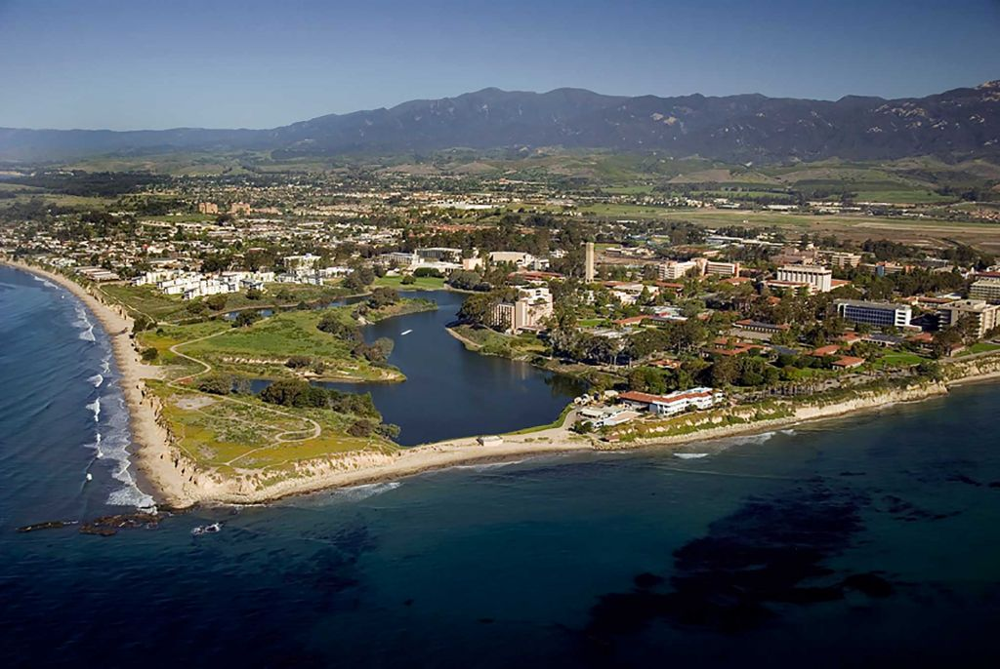

UC Santa Barbara
Major
Computer Science BS
School of Engineering
Pros
- Close To Home!
- In the heart of Silicon Valley, a lot of opportunties as long as you reach for it!
- Top 10 Feeder University into Tech
- Cheaper tuition compared to a UC
Cons
- Old ass buildings
- Expensive housing options, off campus / on campus don't really matter. Same pricing.
- Commuter school, a large population of students aren't "active" within campus. Can still have a social life.
University Stats